Lançado pela primeira vez em 1997, One Piece é um mangá que conta a história da Grande Era dos Piratas. Sua versão animada é um dos animes mais famosos do mundo, e está em exibição até os dias de hoje.
História
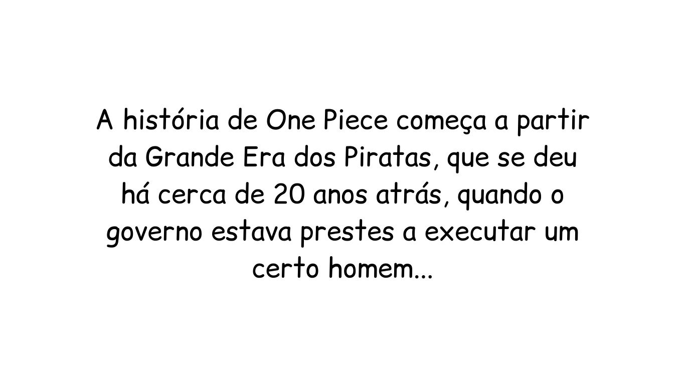
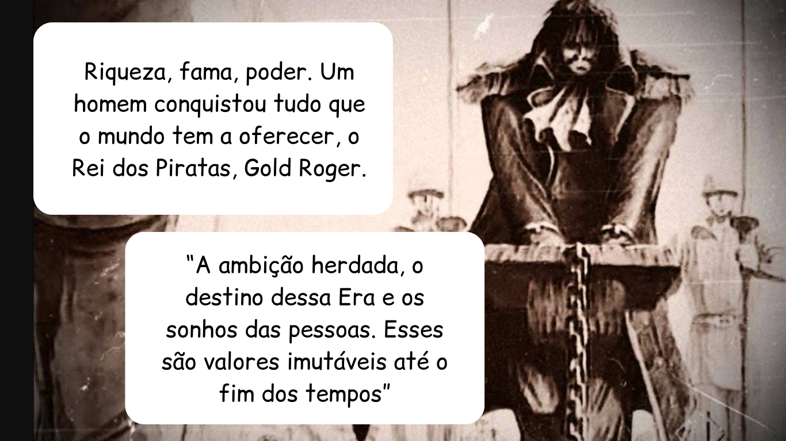
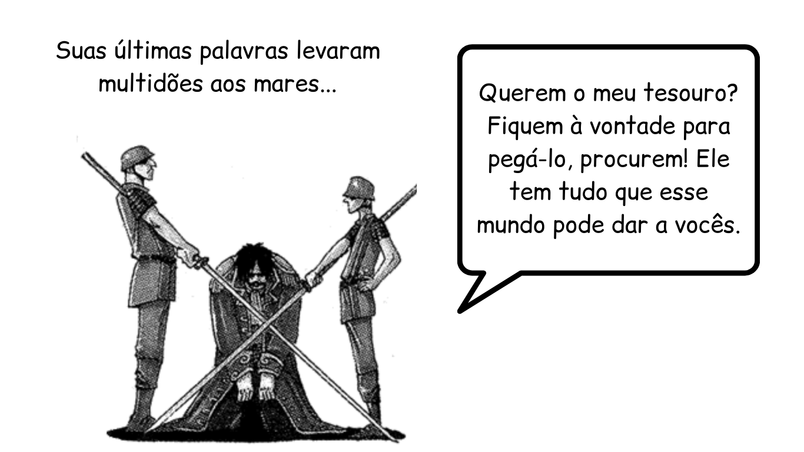
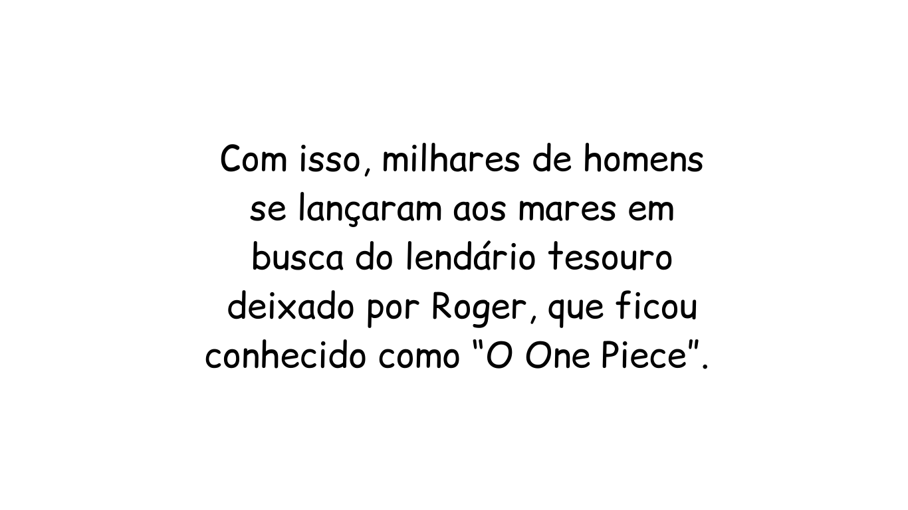
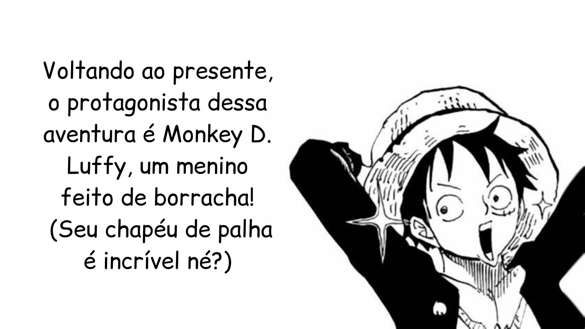
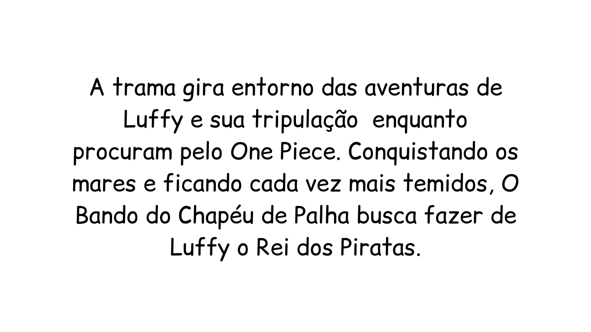
Personagens
Os Chapéus de Palha
Nesse tópico, apresentaremos a tripulação do futuro Rei dos Piratas, o Bando do Chapéu de Palha. Durante sua jornada, Luffy encontrou companheiros incríveis, e extremamente poderosos, que estarão listados abaixo.
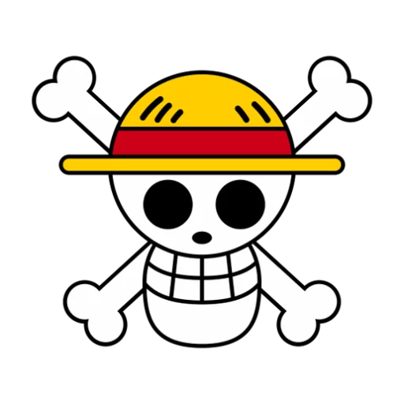
Luffy, Imperador do Mar
O Capitão da tripulação, Luffy, um menino sonhador que busca herdar o legado de Roger e se tornar o novo Rei dos Piratas.
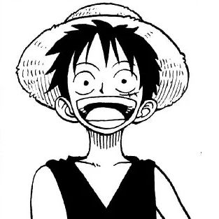
Zoro, O Caçador de Recompensas
Função: Espadachim
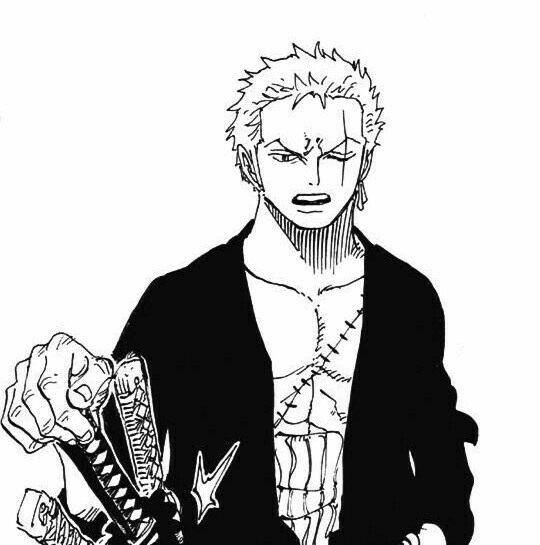
Nami, A Gata Ladra
Função: Navegadora
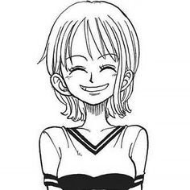
Usopp, O Deus da Mira
Função: Atirador
Sanji, O Perna Negra
Função: Cozinheiro
Chopper, O Monstro
Função: Médico
Robin, A Criança Demônio
Função: Arqueóloga
Franky, O Ciborgue
Função: Carpinteiro
Brook, O Rei das Almas
Função: Músico
Jinbe, O Cavaleiro do Mar
Função: Timoneiro
Lições
One Piece tem muito a nos ensinar, por exemplo, Luffy representa o desejo por liberdade que todos possuímos dentro de nós mesmos, e foi seguindo esse desejo que ele se lançou aos mares em busca do One Piece. Luffy também enfatiza a impotância de companheiros ao nosso lado, quando temos amigos com quem possamos contar quando precisarmos, qualquer problema se torna mais fácil.
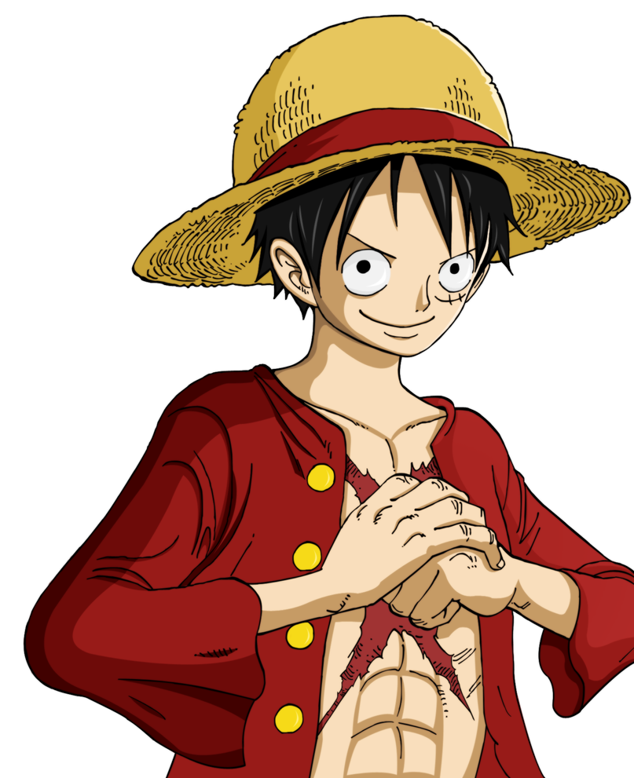
O sonho do Zoro é se tornar o melhor espadachim do mundo, e para isso ele precisa derrotar o atual detentor do título, Mihawk, Olhos de Gavião. Na primeira vez que duelaram, Zoro perdeu, mas isso não o desmotivou de nenhuma forma, pelo contrário, ele jurou nunca mais perder uma luta em sua vida, nos ensinando que a determinação e a persistência nos levam à qualquer lugar.
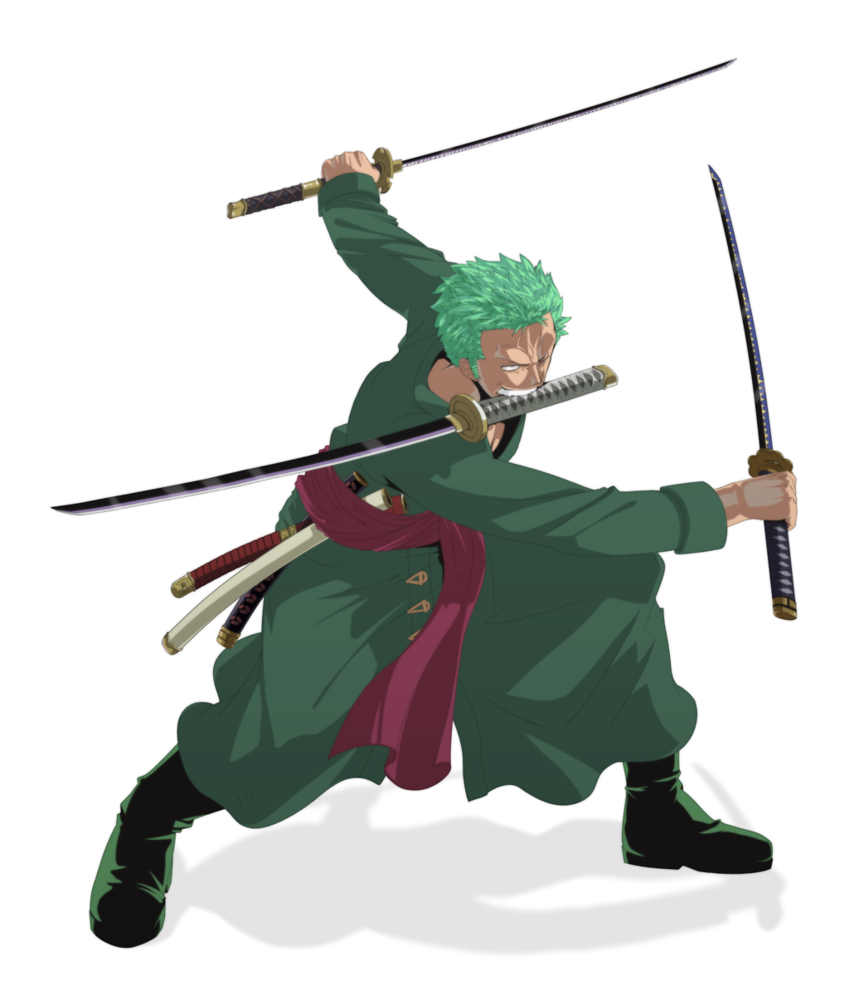
A história da Nami é trágica. Sua vila foi invadida por piratas há 8 anos, e desde então tiveram que pagar um imposto mensal para que suas vidas fossem poupadas. Nami era de uma família pobre, sua mãe gastou tudo que tinha para salvar a vida de Nami... em troca da sua. Nami lutou para conseguir sua vila de volta, ensinando que mesmo com uma vida difícil, não podemos desistir por aqueles que amamos.
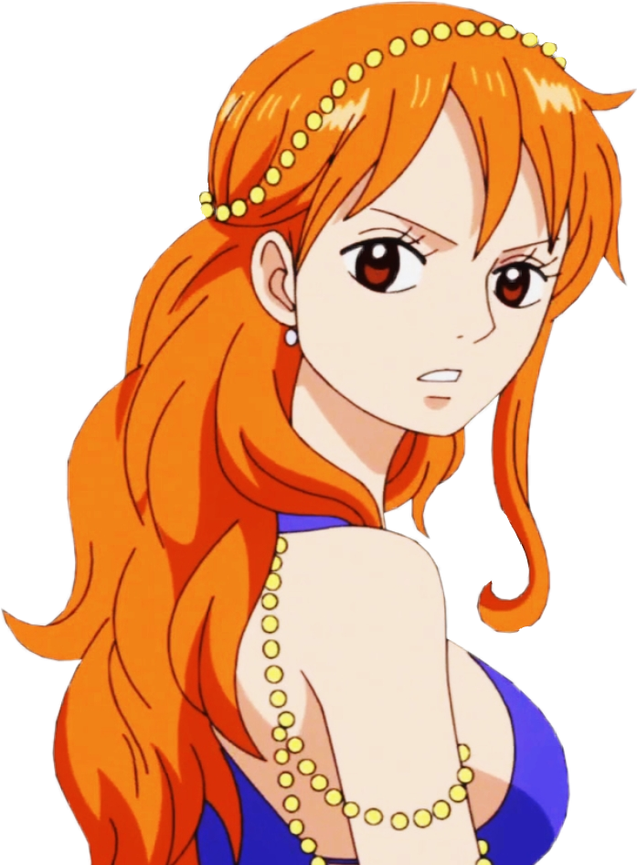
Usopp é filho de um renomado pirata, que deixou sua esposa para se aventurar pelos mares. Porém, Usopp não guarda rancor, ele tem orgulho do grande homem que seu pai é, e o vê como inspiração a continuar batalhando para ser uma pessoa melhor. Ele nos ensina que independente da nossa linhagem, apenas nós definimos o que nós somos.
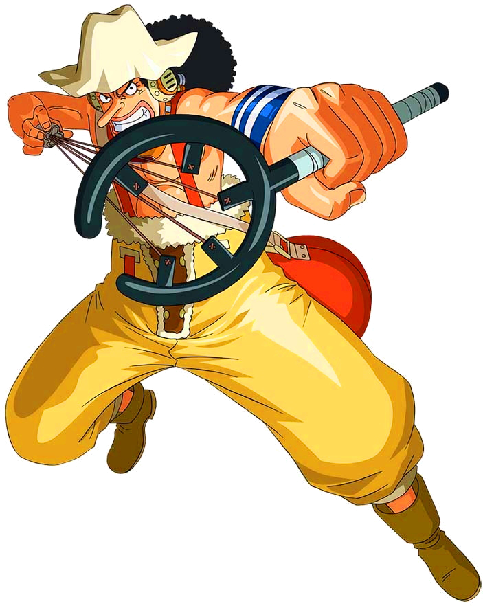
Sanji era um cozinheiro mirim quando seu navio naufragou numa ilha deserta. Sem comida e sem água, Sanji vivenciou o pior sofrimento que uma pessoa pode sentir, e jurou que enquanto ele estivesse vivo, ele iria continuar alimentando quem estivesse com fome. Ele nos ensina a valorizar o que temos, pois mesmo uma coisa simples como comida pode ser um tesouro em certas situações.
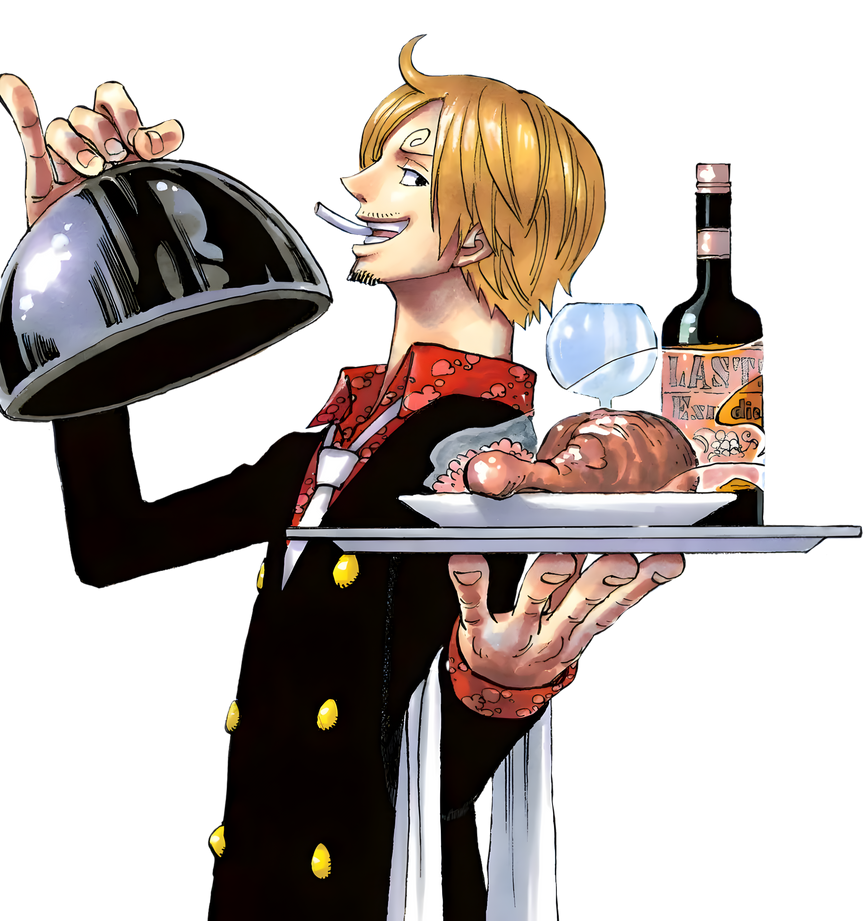
Chopper é metade rena metade humano. Por sua condição, foi negado pelas outras renas, também pelos outros humanos. Foi considerado um monstro. Sem esperanças de conseguir companheiros, Chopper se isolou de todos, porém, sua vida foi ressignificada quando Luffy o chamou para sua tripulação. Ele nos ensina que mesmo a pior das dores é temporária, ninguém sofre pra sempre.
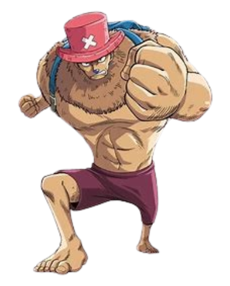
Robin é uma arqueóloga que quer apenas estudar a história, que por algum motivo o governo busca encobrir, matando todos que ousarem buscar esse conhecimento, incluindo sua própria mãe. Robin foi vista como um demônio pelo governo e pelas pessoas. Ela queria morrer. Após encontrar Luffy, ela pela primeira vez sentiu que merecia viver. "Ninguém nasceu pra ficar sozinho"
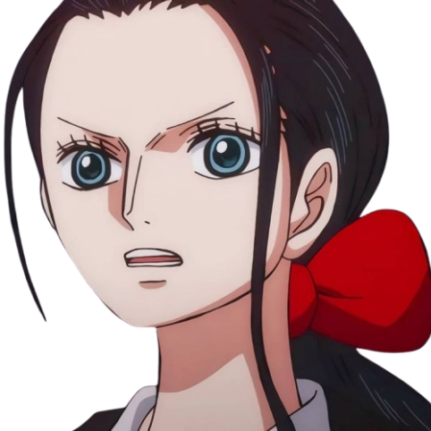
Franky construiu diversos barcos ao longo de sua vida. Porém um deles levou seu tutor à óbito por acidente. Desde então, Franky jurou desmontar todo navio que visse, em memória do Tom, seu professor. Quando conheceu Luffy, ficou claro que não devemos negar nossas convicções, mesmo que possam machucar alguém, devemos trabalhar para usar nossos dons para o bem.
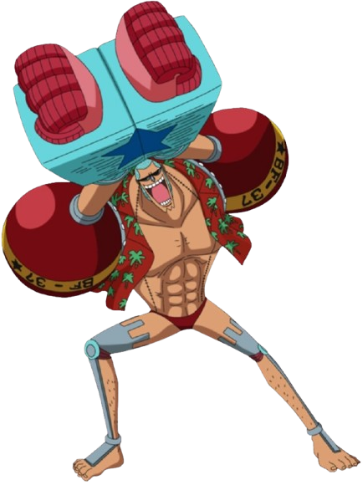
Brook fazia parte deuma tripulação há 50 anos atrás. Essa tripulação prometeu ao seu mascote, uma baleia, que daria a volta ao mundo e voltaria para encontrá-la. Porém, eles morreram no processo. Brook possuia poderes, e acabou revivendo como esqueleto. Desde então passou os últimos 50 anos procurando por sua amiga, nos ensinando a nunca quebrar promessas, mesmo que estivermos mortos.
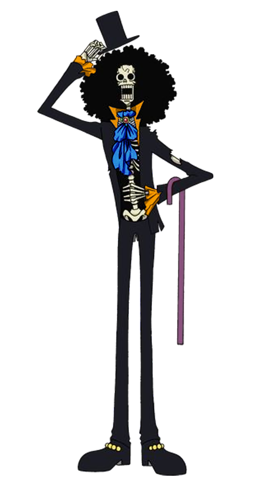
jinbe é um homem-peixe, uma raça discriminada pelos seres humanos. Sua raça é escravizada pelos nobres mundiais, e Jinbe, junto ao seu antigo capitão, libertaram milhares de escravos da área mais nobre do mundo, sendo forçado a se tornar um criminoso procurado. Jinbe nos ensina que todas as raças são iguais, mesmo com cores, corpos ou cabelos diferentes.